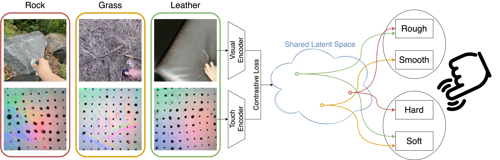
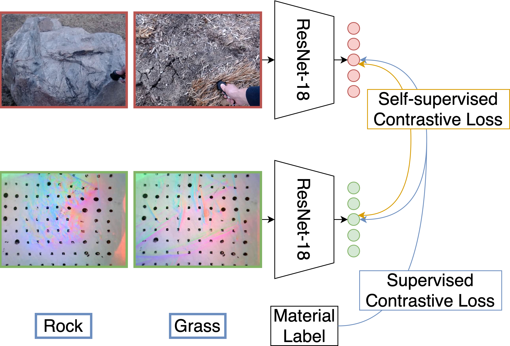
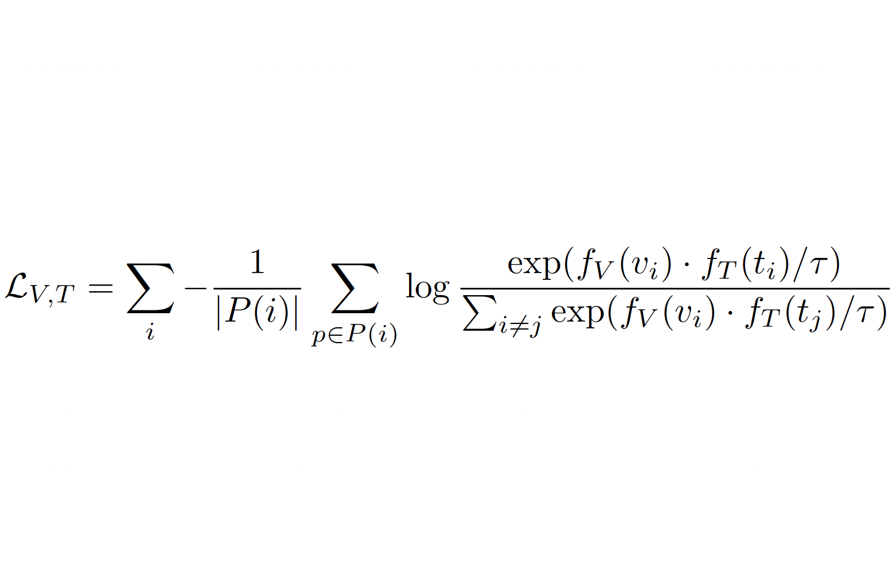
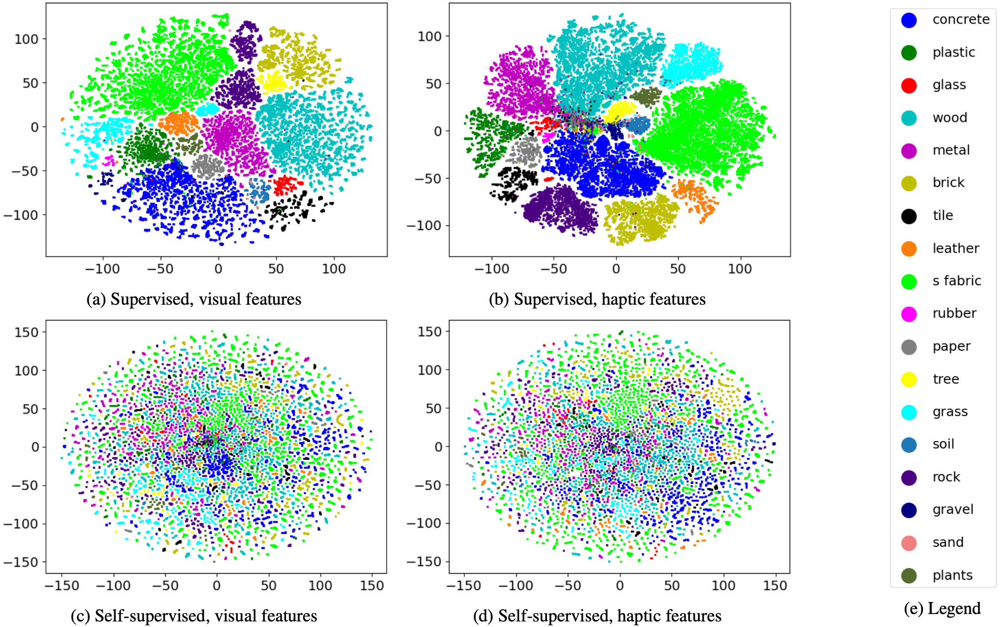
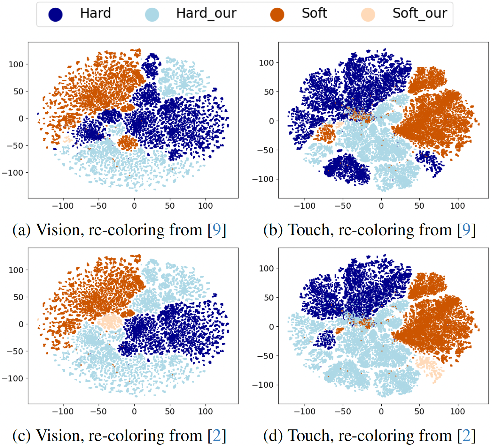
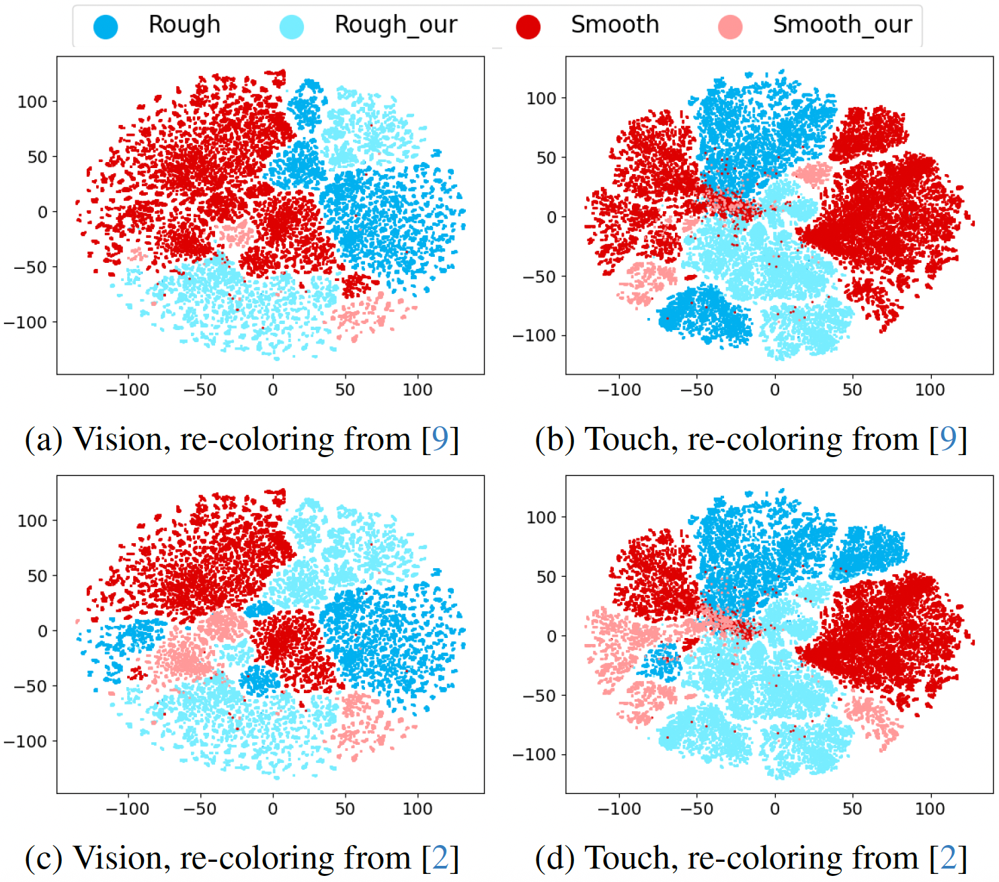
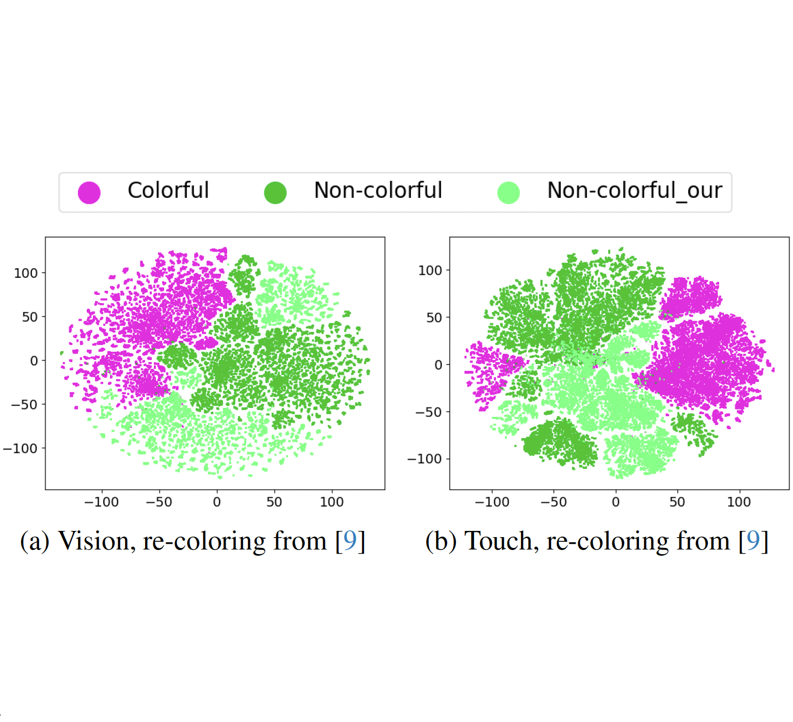

Overview of the proposed approach. On the left, paired RGB images and haptic maps from representative materials (e.g., rock, grass, leather) are processed by modality-specific encoders. On the right, the resulting embeddings are projected into a latent space and analyzed with respect to human perceptual dimensions such as rough/smooth and hard/soft. Our work investigates how visual and tactile modalities contribute to shaping a latent representation that aligns with human material perception.
Extended Reality (XR) systems are increasingly incorporating multi-sensory stimuli to enhance realism and user immersion. Among these, the integration of tactile feedback plays a crucial role. Yet, the pipeline for acquiring, processing, and rendering haptic information—especially in synchrony with visual stimuli—remains largely unstandardized. A common strategy for capturing tactile data involves encoding it as haptic maps, essentially image-based rep- resentations of touch. However, the effectiveness of both visual and tactile modalities in modeling perceptual haptic properties is not yet fully understood.
In this study, we analyze the representational power of haptic maps and RGB images from the Touch and Go dataset using latent space analysis. Specifically, we investigate whether a neural network can structure the latent space in a way that reflects human perceptual attributes such as roughness, hardness, and colorfulness.
Our findings contribute to understanding whether haptic maps can serve as reliable proxies for tactile data and align with how humans perceive material properties, marking a step forward toward perceptually grounded haptic representations in XR environments.


We employ a Supervised Contrastive Learning (SCL) framework to learn a latent space that captures human perceptual attributes from paired RGB images and haptic maps. The architecture consists of two parallel encoders: one for processing RGB images and another for haptic maps. Each encoder extracts modality-specific features, which are then projected into a shared latent space. The SCL loss function encourages the model to cluster embeddings of the same material class while pushing apart those of different classes. This approach allows us to investigate how visual and tactile modalities contribute to shaping a latent representation that aligns with human material perception.
The Supervised Contrastive Learning (SCL) loss function is designed to enhance the discriminative power of the learned embeddings in the latent space. For each anchor sample, the loss encourages the model to pull together embeddings of samples from the same material class (positives) while pushing apart embeddings from different classes (negatives). This is achieved by computing the cosine similarity between the anchor and all other samples in the batch, applying a temperature scaling factor to control the concentration of the distribution. The SCL loss effectively leverages label information to structure the latent space in a way that reflects human perceptual attributes such as roughness, hardness, and colorfulness.

t-SNE visualization comparing supervised and self-supervised learning approaches. The plot illustrates how the two methods differ in their ability to cluster similar samples in the latent space.



Figures 5a and 5b present the hard/soft classification from [9]. The separation between hard and soft materials aligns almost perfectly, despite the fact that our models were trained using sound-derived labels from [17]. The main exception is leather, which is labeled as soft in Touch and Go and is located in the soft region of the latent space, but is perceived as hard in the perceptual study. This could be attributed to the specific type of leather used—for instance, flexible leather garments versus rigid leather upholstery. As to the perceptual analysis performed in [2], the subjective perception (Fig. 5d and 5c) is perfectly aligned to the latent space representation apart from the paper class, which is perceived as hard according to the perceptual study. Interestingly, although paper is labeled as soft in Touch and Go, it lies on the hard side of the boundary in the latent space, consistent with how it is perceived in the perceptual study.
Figures 6a and 6b show the latent space projections colored based on the roughness classification from [9]. These results reveal that the visual encoder does not form clearly separable clusters for rough and smooth materials. The tactile latent space, while better organized, still shows discrepancies with the perceptual labels. Specifically, plastic and paper are associated with the rough label while they are perceptually perceived as smooth according to [9]. Additionally, the rock class which is classified as smooth according to the Touch and Go dataset, is instead perceptually perceived as rough. However, this might strongly depend on the specific samples as natural rocks can be both rough and smooth, while the processed counterparts are usually smoother. In addition, it is interesting to note that the paper class was on average scored 3 out of 6 in the roughness-smooth dimension in [9], thus it can be considered a challenging material to classify on the rough/smooth dimension based on human perception. This is further confirmed by the study performed in [2], where the paper material is associated to the rough class from a perceptual perspective (see Fig. 6c and 6d). As to the other materials, similar conclusions can be drawn.
An additional dimension considered in [9] is colorfulness. The mapping between the perceptual classification and the latent space is provided in Fig. 7. It is interesting to note that while for the touch latent space there is not a clear separation, a boundary can be identified for the vision latent space. This result can be intuitively explained as color is a feature which can be encoded by the visual system while it is unperceivable through touch.
@article{stefani2025understanding,
title={Understanding Touch Through Latent Spaces: Can Images and Haptic Maps Reflect Human Perception?},
author={Stefani, Antonio Luigi and Baldoni, Sara and Bisagno, Niccol{\'o} and Battisti, Federica and Conci, Nicola and De Natale, Francesco},
booktitle={Proceedings of the IEEE/CVF International Conference on Computer Vision (ICCV) Workshops},
month={October},
year={2025}
}
@article{stefani2025signal,
title={Signal processing for haptic surface modeling: A review},
author={Stefani, Antonio Luigi and Bisagno, Niccol{\`o} and Rosani, Andrea and Conci, Nicola and De Natale, Francesco},
journal={Signal Processing: Image Communication},
pages={117338},
year={2025},
publisher={Elsevier}
}
In this work, we present a comprehensive overview of the state-of-the-art in haptic surface modeling, with a particular focus on the signal processing techniques employed in the field. We categorize existing approaches, describe the most important datasets in detail, and provide a thorough overview of the key tasks involved in haptic surface processing.
Look here to get more information.
We acknowledge the support of the MUR PNRR project iNEST - Interconnected Nord-Est Innovation Ecosystem (ECS00000043) funded by the European Union under NextGenerationEU. In addition, this work was partially supported by the European Union under the Italian National Recovery and Resilience Plan (NRRP) Mission 4, Component 2, Investment 1.3, CUP C93C22005250001, partnership on “Telecommunications of the Future” (PE00000001 - program “RESTART”).